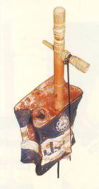

WARS OF DOLMA - A WREATH OF ABSURDITY: ESCHATOLOGY OF "OUR CULTURE"

(1) What is more interesting is that the more last word in this sphere is the instrument made with the use of an iron tank of machine oil of Iranian production as the body of kyamancha. Robab Mehali Khuzestan.
The other day one of my acquaintances asked me: “Listen, tell me honestly whether Armenians are in reality stole our kyamancha”?
Questions like these which reflect the essence of the “War of Dolma” between our societies were heard by me in Baku more than once. The reasons of its origin and paradoxicality are simple and absolutely objective. Simultaneously with the Karabakh tragedy, the “War of Dolma” was and is a certain “cultural” confrontation which is within the capabilities of our societies and since the start of the conflict it has assumed the so-called an “information flesh”. In the course of time it more and more intensified the available enlarging context and became the effective factor of transformation of public consciousness and collective unconsciousness of both of our societies.
Today the “Wars of Dolma” between Armenians and Azerbaijanians is a reality and its ignorance is one of the main problems for both the society and the individuals of our countries. The “Wars of Dolma” exist in the form of a “cultural” confrontation. It is also somehow a whole “symphony” of inferiority complex inside the sick and morbid society, thus, reflecting the (un)settled crisis problems arisen between the two societies.
Moreover, the “Wars of Dolma” unlike the very political conflict are far from so tough and rough centralism, since they are multiform, polyphonic and polycentric. All the skirmishes and clashes of the “Wars of Dolma” starting from (un)harmless user appeal in the Internet which provoked mockery of “cultural” “analyses” and slogans with own ones, “cosmic” level of experts and ending with menacing ideological manifests which were made public by local Mass Media and TV channels, from the lips of local establishments accompanied with frequent insignificant changes of (sub) consciousness and mentality, mostly, making young people zombies.
The hosts of the “Wars of Dolma” are not housewives at all, as can be judged from the name. Children, schoolchildren, students, hikers and even respectable men and women, professors and academicians are involved here. But we ought to pay tribute to capital peripoliticians and pseudo-intellectuals who are chief inspires and generators. The main laurels and services in battle in the “Wars of Dolma” belong to them.
In the “Wars of Dolma” the appeal to our “great and nice past” are unconditionally dark and dubious perspectives of the present day which are thoroughly disguised by extracts of “transitional period”, the modern (non)transitory stage of our history. Simultaneously the inner metastasis and feverish aspiration for auto-intoxication of the society compel the “Wars of Dolma” to leave its own borders, exceed its own logic, not in a tautological sense, but in the growth and development of power of argumentation and fabulous increase of its “historical” potential which is fraught with death.
There was no wish to explain again that in spite of my personal dislike for the instrument in question (I dislike stringed instruments at all, I am crazy about percussion instruments). Kyamancha (as well as other instruments of the region like tar, balaban, duduk, nagara etc.) is nevertheless the result of the great civilization, in the areal of which, prior to the Russian invasion, all our neighbours and we had been living for more than a thousand years. The culture was originated only in vast areas and in big formations that is in Empires. Iran has over 40 kinds of variety of kyamanchas. (If interested, you can refer to “Anthology of Iranian Instruments” consisting of two volumes and which was published in Teheran last year by a musicologist Mohammad Reza Darvishi (1) where all the aspects of playing, sounds and technical details of these instruments are described in detail.) Almost all segments-ethnologists of the Empire such as Persians, Kurds, Assyrians, Lors, Arabs, Belujes, Turkmen etc. along with Armenians and Azerbaijanians equally assisted in the creation and perfection of these instruments (not only music is meant here, but also all aspects of culture).
With the arrival at the region of new passionaries, that is Russians and our inclusion into a new formation, a long forgotten community, did not go to the past. On the contrary, with the actualization of the ethnic aspect with the European point of view in the new Empire, almost everything revived afresh, namely, music, fairy-tales, legends and others. Al these deriving from the bosom of the traditional Empire must have served for a new ethnic identification. Later on reciprocal accusations of “appropriation”, with short breaks during the whole 20th century, having forgotten that in the south the Empire is dilapidated but still continues to lead its own life. All the cultural processes inside of it keep their existence. And on the contrary since the independence days, there has almost been no living culture replaced with substitutes and conventionalism in our present countries.
Our societies do not lead a real life. They are constantly reproducing pseudo-ideals, imaginary figures, images, dreams which have already been materialized (I think the general name of the “Wars of Dolma” fully conforms to these processes) and is around us and which, in our fatal vacancy, we need to revive again and again.
Let us divert a bit from the main subject for a while. Is it possible to image cellos arguing about their origin under Verdun of Germans and French? Yes, and it is quite difficult to image to whom a bayan belongs on the field of Kursk, the same with a mouth-organ before Brandenburdger Tor in April 45. Yes, Americans and Japanese might be more lucky in this. No arguing! But still it is not easy to bring an example where the question of “cultural perfection” was raised so harshly and painfully, in the form of “Wars of Dolma” arranged with cultural life in our societies.
The “Wars of Dolma”, that is, the absurdity will not come to its end soon. Perhaps, it will never come to its end, at any rate, until the South Caucuses is a “historical” notion and not geographic. Beckett and Ionesco is a reality for us, as in our homes. Apparently, the absurdity has been invented not in Ireland and not in our country, the absurdity is our existence. As for the absurdity of literature, then it is as simple as that. One can read publications in our newspapers or editions of Academy of Science, watch TV, search forums. Here is the absurdity in its pure form and the absurdity of literature in its brilliant performance. The “Wars of Dolma” is the “crown” of the entire absurdity which is being developed here, in the souls of people.
I wonder why we all are so passionately fond of absurdity? Apparently, the reason is that in fact we are terribly scared of what is simple and intelligible. Is our reality indeed so fearful?
Elmir Mirzoev
11-02-07
Questions like these which reflect the essence of the “War of Dolma” between our societies were heard by me in Baku more than once. The reasons of its origin and paradoxicality are simple and absolutely objective. Simultaneously with the Karabakh tragedy, the “War of Dolma” was and is a certain “cultural” confrontation which is within the capabilities of our societies and since the start of the conflict it has assumed the so-called an “information flesh”. In the course of time it more and more intensified the available enlarging context and became the effective factor of transformation of public consciousness and collective unconsciousness of both of our societies.
Today the “Wars of Dolma” between Armenians and Azerbaijanians is a reality and its ignorance is one of the main problems for both the society and the individuals of our countries. The “Wars of Dolma” exist in the form of a “cultural” confrontation. It is also somehow a whole “symphony” of inferiority complex inside the sick and morbid society, thus, reflecting the (un)settled crisis problems arisen between the two societies.
Moreover, the “Wars of Dolma” unlike the very political conflict are far from so tough and rough centralism, since they are multiform, polyphonic and polycentric. All the skirmishes and clashes of the “Wars of Dolma” starting from (un)harmless user appeal in the Internet which provoked mockery of “cultural” “analyses” and slogans with own ones, “cosmic” level of experts and ending with menacing ideological manifests which were made public by local Mass Media and TV channels, from the lips of local establishments accompanied with frequent insignificant changes of (sub) consciousness and mentality, mostly, making young people zombies.
The hosts of the “Wars of Dolma” are not housewives at all, as can be judged from the name. Children, schoolchildren, students, hikers and even respectable men and women, professors and academicians are involved here. But we ought to pay tribute to capital peripoliticians and pseudo-intellectuals who are chief inspires and generators. The main laurels and services in battle in the “Wars of Dolma” belong to them.
In the “Wars of Dolma” the appeal to our “great and nice past” are unconditionally dark and dubious perspectives of the present day which are thoroughly disguised by extracts of “transitional period”, the modern (non)transitory stage of our history. Simultaneously the inner metastasis and feverish aspiration for auto-intoxication of the society compel the “Wars of Dolma” to leave its own borders, exceed its own logic, not in a tautological sense, but in the growth and development of power of argumentation and fabulous increase of its “historical” potential which is fraught with death.
There was no wish to explain again that in spite of my personal dislike for the instrument in question (I dislike stringed instruments at all, I am crazy about percussion instruments). Kyamancha (as well as other instruments of the region like tar, balaban, duduk, nagara etc.) is nevertheless the result of the great civilization, in the areal of which, prior to the Russian invasion, all our neighbours and we had been living for more than a thousand years. The culture was originated only in vast areas and in big formations that is in Empires. Iran has over 40 kinds of variety of kyamanchas. (If interested, you can refer to “Anthology of Iranian Instruments” consisting of two volumes and which was published in Teheran last year by a musicologist Mohammad Reza Darvishi (1) where all the aspects of playing, sounds and technical details of these instruments are described in detail.) Almost all segments-ethnologists of the Empire such as Persians, Kurds, Assyrians, Lors, Arabs, Belujes, Turkmen etc. along with Armenians and Azerbaijanians equally assisted in the creation and perfection of these instruments (not only music is meant here, but also all aspects of culture).
With the arrival at the region of new passionaries, that is Russians and our inclusion into a new formation, a long forgotten community, did not go to the past. On the contrary, with the actualization of the ethnic aspect with the European point of view in the new Empire, almost everything revived afresh, namely, music, fairy-tales, legends and others. Al these deriving from the bosom of the traditional Empire must have served for a new ethnic identification. Later on reciprocal accusations of “appropriation”, with short breaks during the whole 20th century, having forgotten that in the south the Empire is dilapidated but still continues to lead its own life. All the cultural processes inside of it keep their existence. And on the contrary since the independence days, there has almost been no living culture replaced with substitutes and conventionalism in our present countries.
Our societies do not lead a real life. They are constantly reproducing pseudo-ideals, imaginary figures, images, dreams which have already been materialized (I think the general name of the “Wars of Dolma” fully conforms to these processes) and is around us and which, in our fatal vacancy, we need to revive again and again.
Let us divert a bit from the main subject for a while. Is it possible to image cellos arguing about their origin under Verdun of Germans and French? Yes, and it is quite difficult to image to whom a bayan belongs on the field of Kursk, the same with a mouth-organ before Brandenburdger Tor in April 45. Yes, Americans and Japanese might be more lucky in this. No arguing! But still it is not easy to bring an example where the question of “cultural perfection” was raised so harshly and painfully, in the form of “Wars of Dolma” arranged with cultural life in our societies.
The “Wars of Dolma”, that is, the absurdity will not come to its end soon. Perhaps, it will never come to its end, at any rate, until the South Caucuses is a “historical” notion and not geographic. Beckett and Ionesco is a reality for us, as in our homes. Apparently, the absurdity has been invented not in Ireland and not in our country, the absurdity is our existence. As for the absurdity of literature, then it is as simple as that. One can read publications in our newspapers or editions of Academy of Science, watch TV, search forums. Here is the absurdity in its pure form and the absurdity of literature in its brilliant performance. The “Wars of Dolma” is the “crown” of the entire absurdity which is being developed here, in the souls of people.
I wonder why we all are so passionately fond of absurdity? Apparently, the reason is that in fact we are terribly scared of what is simple and intelligible. Is our reality indeed so fearful?
Elmir Mirzoev
11-02-07